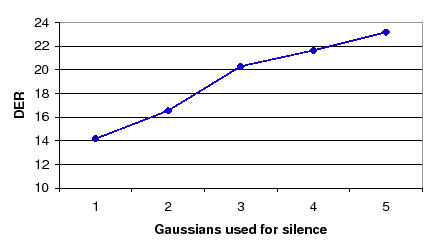
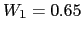
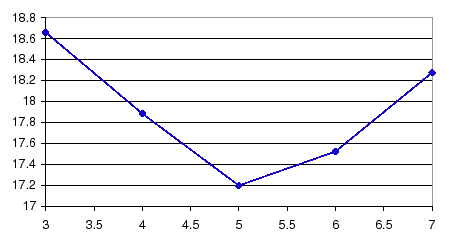

Next: Overall Experiments and Analysis Up: Speaker Diarization Module Experiments Previous: Multiple Feature Streams Automatic Contents
In the previous section each algorithm proposed has been tested on its own, against the baseline system described in 6.1.1. Table 6.17 summarizes the results of each algorithm as applied independently to the baseline system, either being only the TDOA-MDM system for the weights computation, or the average of all three systems. The last column shows the rank in improvement over the baseline obtained by each system. This rank is used to determine the order of application of the algorithms in agglomerate to conform the final system.
Given the previous section procedure, emphasis must be given to the big difference in some cases between the three systems that are being tested (SDM, MDM and TDOA-MDM), therefore it occurs that some of the algorithms obtain better results with one system than with the other. Results obtained as an average are lower in improvement percentage than what could be obtained in a targeted application. By using an average of three systems and an extended development set (20-24 meeting excerpts) the level of uncertainty of the results (very typical in speaker diarization, being called ``flakiness'') is reduced.
In this section the baseline system is iteratively augmented with the different individual algorithms and further analysis on the parameters studied in the previous section is performed to assess that the same settings (or others) are the optimum in each step. Optimally a full system should be built and a full search done over all parameters space to find the optimum set, but the big number of dimensions of this space and number of algorithms disallow this procedure. Instead, a greedy algorithm iteratively adapts each algorithm to perform optimally within the system.
|  |
The first algorithm to be included into the system is the automatic weighting of the TDOA and acoustic streams using an initial weight . At this point, and given that the second algorithm to include is the model complexity selection for the acoustic features, it is interesting to see how the complexity of the TDOA models in the TDOA-MDM system affect the behavior of the system. Figure 6.16 shows how 1 Gaussian mixture is the optimum complexity to be used for the TDOA models initially. Such complexity increases for the TDOA models as the different clusters merge by creating models that contain the sum of both parents complexities.
As hinted above, the algorithms to include in the next step are the model complexity selection and number of initial clusters. Figure 6.17 shows the evolution of the DER when changing the values of the CCR parameter for the three considered systems. As it happened when studying the individual system, the TDOA-MDM system performs better with lower CCR values than the other two. The optimum working point remains at CCR=7.
Table 6.18 shows the development and evaluation sets DER scores for all systems considered up to this point, and the average. It compares the current results with those of the baseline and the system at the prior agglomerative step, so that improvements in overall can be observed as well as relative improvements of using this technique in the agglomerate. While the average DER are all better than the baseline for all cases, in the evaluation set the SDM system performs much worse than the baseline. Compared to the prior system (the stream-weight selection) an improvement is seen mostly in the test set where the prior system got worse results than the baseline, but combined with this algorithm obtains a 17.03% DER versus a 18.65% DER, a net gain of 1.62%.
| |||||||||||||||||||||||||||||||||||||||||||||
Next, the friends-and-enemies algorithm is evaluated when used in conjunction with the previous systems. In the previous section it was determined that the combinations of metric and init segment selection corresponding to 2-2 and 3-3 gave the best results. Figure 6.18 show the average DER when using either set of parameters. Although the optimum number of friends was 3 when evaluating the algorithm by itself, it is clear in this case that the minimum for both combinations goes to 4 friends.
In Table 6.19 results are shown for the development and evaluation sets for both metric sets with 4 friends per cluster, comparing them to the prior best system and to the baseline.
| |||||||||||||||||||||||||||||||||||||||||||||||||||||||
Although in the development set the MDM system is improved in both metric alternatives with respect to the prior and baseline systems, this is not enough to obtain an average better result. In the evaluation set the same thing happens, being this time the TDOA-MDM system which obtains much better results than previously, but they are masked by the bad performance in SDM and MDM conditions. Even though the system shows that can be useful for certain tasks and conditions, in average in the agglomerate system it shows unable to improve the average performance at this point, therefore it is not included for the next step.
|  |
Following this algorithm, the next one in succession is the CV-EM training algorithm. The function of the CV-EM algorithm as used in this thesis is to execute at each training step the optimum number of iterations that allow the cluster models to optimally model the data without overfitting to it or undertraining. In order to compare this algorithm to the standard EM-ML training algorithm in figure 6.19 the average DER is evaluated in terms of the number of iterations of EM training for the system at this point using standard EM-ML. The optimum amount of iterations is 5, as has been used in the baseline system.
When using the CV-EM algorithm at this point in the system, figure 6.20 shows the DER for all three considered systems when selecting different number of CV-EM parallel models. contrary to the same test performed with the algorithm in isolation, in this case all three systems observe a very similar behavior to the number of used models. This can be explained with the increased robustness of the system by using the previously applied algorithms, which makes its performance much more stable and less flaky to small changes in the parameters. In the current CV-EM application the optimum number of models is 25, although 20 would be a good choice too, as results are very stable in that region. Using 15 or less models increases the DER, probably because the different models contain data that starts to be too different to each model's and therefore leads the EM steps to obtain divergent parameters for the models.
| |||||||||||||||||||||||||||||||||||||||||||||
Table 6.20 shows the results comparing the inclusion to the CV-EM training algorithm to the prior system (which does not include the friends-and-enemies initialization) and to the baseline system. In the development set the main improvement comes from the MDM system, leading to a final slight gain over the prior system. In the evaluation set results are much improved and a 5.9% relative improvement is observed.
The next algorithm to introduce, according to the order of individual improvement, is the frame purification algorithm. When used in isolation, the algorithm achieved optimum performance when using 50% of the possible Gaussians and keeping 70% of the frames (eliminating the 30% with highest evaluated metric). In order to test both parameters in this setting the first sweep is pursued on the % of frames while keeping the 50% Gaussians fixed.
Figure 6.21 shows the DER for the three compared systems for different frame acceptance percentages. The case of 100% corresponds to the prior algorithm, without any frame purification. In all cases the curves show a high DER at 60% which have a stable improvement as the percentage of acceptd frames increases (with exception of 80% in TDOA-MDM). Both SDM and TDOA-MDM obtain several values with better DER than the 100% case, but in MDM this always behaves better. The optimum working point according to the average DER is at 90% of frames accepted.
Fixing now the % of frames at 0.9, the different values for the % of Gaussians used is studied. Figure 6.22 shows the DER when the percentage goes from 20% to 100%. SDM and MDM systems have a very flat behavior, which is disrupted in the TDOA-MDM system from 40$ to 60%. The optimum points are at 25% and 100%, which are equivalent to the 2nd and 1st metrics shown in the algorithm description.
These results have a double interpretation. On one hand, by the success of the algorithm in improving the DER it is proven that acoustic frames with high likelihood are more prone at conveying information that is not useful at discriminating between speakers. This could be used in other fields, like speaker identification, where techniques based on frame bagging are already in use to omit those frames with the lowest likelihoods.
| |||||||||||||||||||||||||||||||||||||||||||||||||||||||
Table 6.21 shows the DER for the frame purification algorithm (both using 25% and 100% of Gaussians). All algorithms show an excellent performance both in the development set and in the evaluation set, outperforming the baseline and the prior algorithm (agglomerate system with CV-EM training). This is a 7.4% and 3.5% relative on the evaluation set using either the 25% or 100% of Gaussians (respectively).
Finally, the segment purification algorithm is evaluated using the system composed of all successful prior systems. Table 6.22 shows the results in comparison with the prior system (selected with 25% Gaussians used) and the baseline.
| |||||||||||||||||||||||||||||||||||||||||||||
Results are mixed, improving in certain systems and being worse in others. In average both the development and evaluation sets obtain worse results than the prior system. An interesting effect is also noticed in that for both the development and evaluation the MDM system performs worse than the SDM, which indicates that somehow the segment purification system can identify better the segments from alien speakers when only one channel is used. Given the results and the high computational load that the segment purification poses on the system, this is taken out of the experiments system.
user 2008-12-08